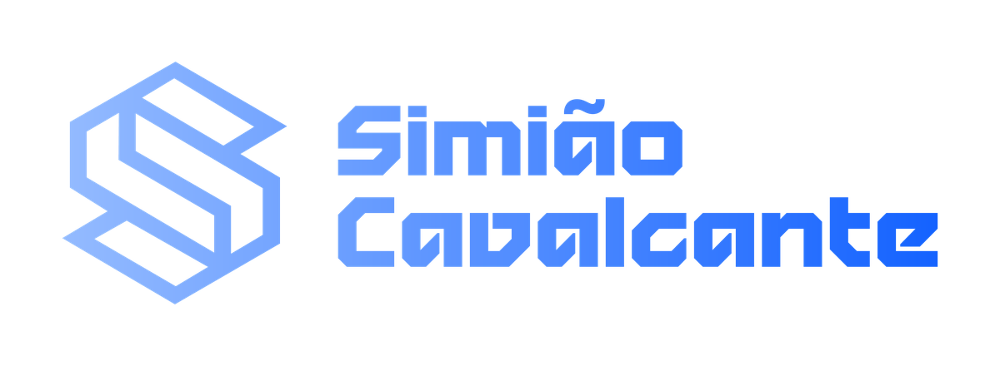
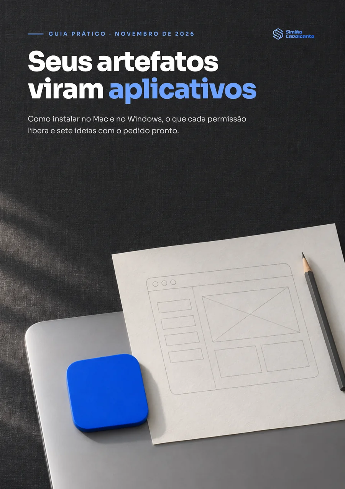
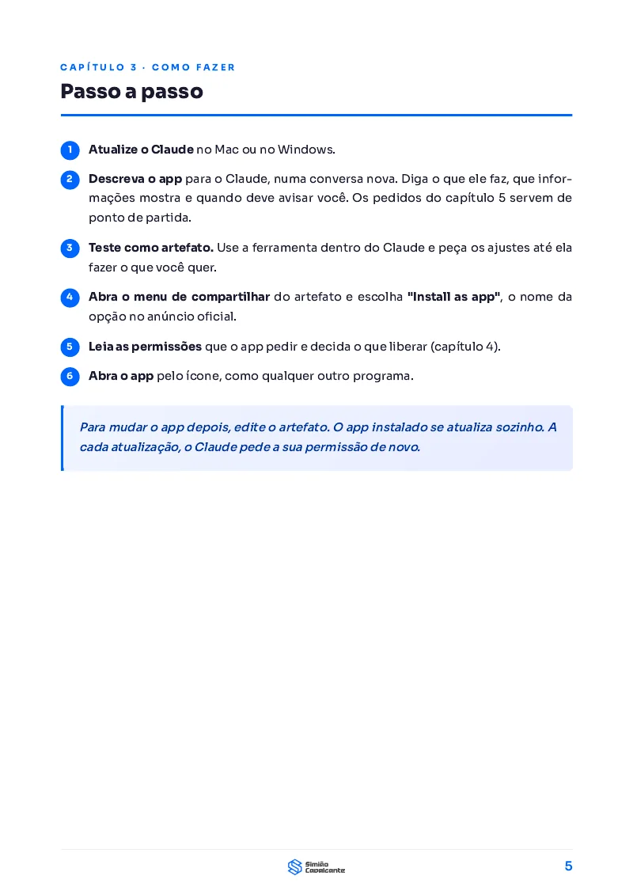
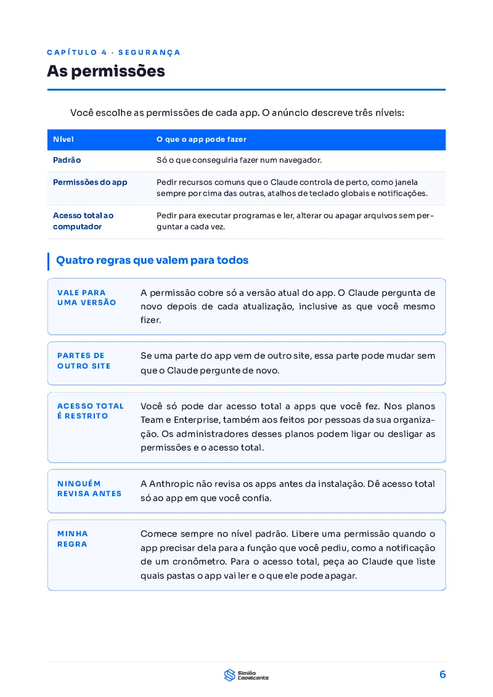
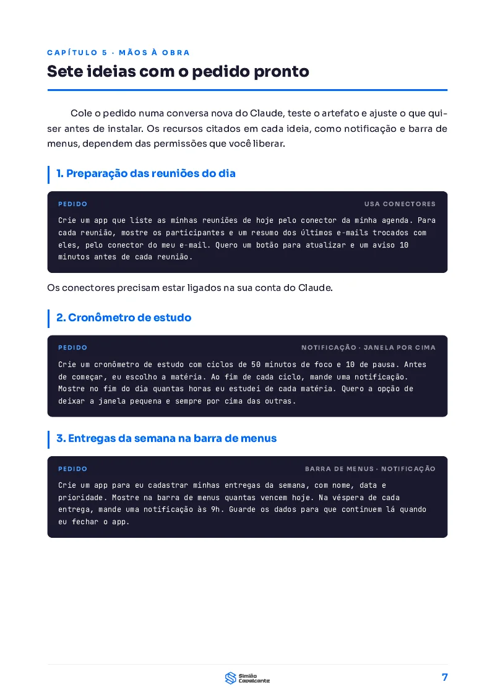

Baixar o PDFDesde 24/11/2026, o Claude para Mac e Windows instala artefatos como aplicativos, com ícone e janela próprios. Este guia mostra o passo a passo, explica os três níveis de permissão e traz sete ideias de apps com o pedido pronto para colar.

Conte ao Claude o que o app faz, o que mostra e quando deve avisar você.
Use a ferramenta dentro do Claude e peça ajustes até ficar do seu jeito.
No menu de compartilhar, escolha "Install as app". O recurso está em beta e chega aos poucos a todos os planos.
O que um artefato instalado ganha: ícone, janela, notificações e atualização automática.
Planos, quem ainda não tem acesso e o que não pode ser instalado.
Do pedido ao ícone na sua tela, em seis passos.
Os três níveis e as regras que valem para todos os apps.
Reuniões, estudo, entregas, ideias, PDF, Downloads e revisão, com o pedido pronto.
Os apps que a própria Anthropic mostrou no anúncio.



Procurador e professor, uso o Claude todos os dias no trabalho e nos estudos. No Instagram e no YouTube, mostro como levar a inteligência artificial para a prática jurídica e para a preparação para concursos.
Baixe o guia e me conte nos comentários qual app você criou.